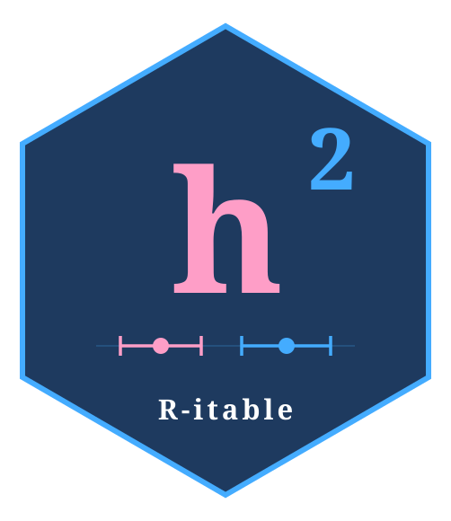

Build an additive genetic relationship matrix from a pedigree
Source:R/build_grm.R
build_grm.RdConstructs the additive genetic relationship matrix A (= 2 x kinship matrix) for a set of study subjects, using a pedigree that may include additional founder parents not in the study sample.
Usage
build_grm(
ped_df,
study_ids = NULL,
id_col = "id",
pat_col = "pat",
mom_col = "mom",
sex_col = "sex"
)Arguments
- ped_df
A data frame with at least the columns
id,pat,mom, andsex. Missing parents should beNAor0.sexshould be numeric:1= male,2= female (any other value is recoded to1with a warning).- study_ids
Character or integer vector of IDs for the study subjects whose sub-matrix should be extracted. Defaults to all IDs in
ped_df.- id_col, pat_col, mom_col, sex_col
Column names for the four required pedigree fields. Defaults are
"id","pat","mom","sex".
Value
A symmetric numeric matrix of dimension
length(study_ids) x length(study_ids), with diagonal entries equal to
1 for non-inbred individuals and row/column names matching study_ids.
Details
The function calls kinship2::kinship() on the full pedigree (including
founders), then multiplies by 2 to obtain the additive relationship matrix,
and finally subsets to study_ids. Including founders in the pedigree
ensures that kinship coefficients between study subjects connected only
through founders are estimated correctly.
Examples
# Minimal two-generation pedigree: two couples, four offspring
ped <- data.frame(
id = 1:8,
pat = c(0, 0, 0, 0, 1, 1, 3, 3),
mom = c(0, 0, 0, 0, 2, 2, 4, 4),
sex = c(1, 2, 1, 2, 1, 2, 1, 2)
)
A <- build_grm(ped, study_ids = 5:8)
round(A, 3)
#> 5 6 7 8
#> 5 1.0 0.5 0.0 0.0
#> 6 0.5 1.0 0.0 0.0
#> 7 0.0 0.0 1.0 0.5
#> 8 0.0 0.0 0.5 1.0